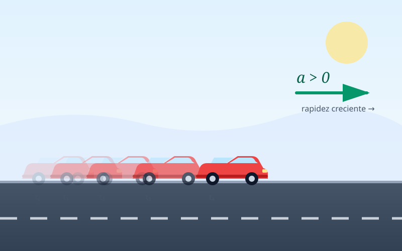
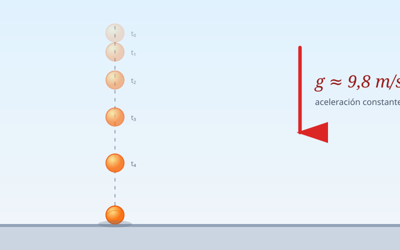
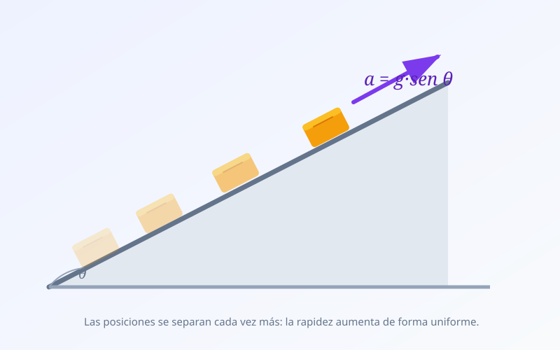

Velocidad
v = v₀ + a·t
La velocidad cambia de forma lineal con el tiempo. Si a y v₀ tienen distinto signo, el móvil primero disminuye su rapidez.
Movimiento Rectilíneo Uniformemente Variado: trayectoria recta y aceleración constante. Responde las 12 preguntas, comprueba tus respuestas y lee la justificación de cada una.
En el MRUV la aceleración es constante distinta de cero. Eso permite usar tres ecuaciones y leer el movimiento en sus gráficas.
v = v₀ + a·t
La velocidad cambia de forma lineal con el tiempo. Si a y v₀ tienen distinto signo, el móvil primero disminuye su rapidez.
x = x₀ + v₀·t + ½·a·t²
El término cuadrático hace que la gráfica posición–tiempo sea una parábola (no una recta).
v² = v₀² + 2·a·(x − x₀)
Útil cuando conoces velocidades y desplazamiento, pero no el intervalo de tiempo.
Observa cómo cambia la separación entre posiciones sucesivas: en el MRUV los intervalos crecen (o decrecen) de forma regular porque la rapidez no es constante.

Si a tiene el mismo sentido que v, el vehículo gana rapidez: las marcas de posición se separan cada vez más.

Con a = −g ≈ −9,8 m/s² (o −10 m/s² aproximado) y parte del reposo: v = −g·t y y = y₀ − ½·g·t².

Sin rozamiento, la aceleración del bloque es constante e igual a g·sen(θ): otro caso típico de MRUV.
Ingresa los valores del problema. La imagen se dibuja con tus datos y el resolutor muestra cada fórmula ya sustituida, el resultado y su interpretación física.
Completa los datos a la izquierda y pulsa Calcular resultado para ver el esquema, las fórmulas y la explicación paso a paso.
Elige un tema del catálogo. Verás su concepto, sus fórmulas y casos reales. Puedes cambiar los valores o reescribir la fórmula y la gráfica se actualiza al instante.
Selecciona una opción y pulsa Comprobar. Verás al instante si es correcta y la justificación física.
Tutor local · usa tus datos